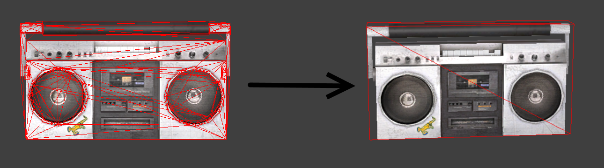
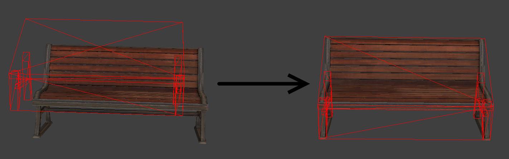

Collisions require a lot of math (especially 3D collisions). This takes up CPU power and in turn reduces the performance of the game for no overall benefit. Sure a couple of polygons may not be terrible, but they add up in maps that have hundreds if not thousands of models in them. If each model has 10 extra polygons then overall the map could be loading thousands of extra unnecessary collisions, and we want to avoid this.

What collision models need to be rebuilt?
There are two instances when collision models need to be rebuilt:
-Some model makers compile their reference mesh as the collision model. The above boombox (on the left) is an example of this. In general this is bad practice because collision models are made to be simple and just outline objects, they are not supposed to have polygon faces for every vertex in the mesh. If a model is found that's using the reference mesh as the collision model then it should have its collision model rebuilt.
-Some collision models were incorrectly compiled causing the compiler to turn concave vertices into convex vertices. You can tell if a collision model has this problem by looking to see if there are collision boxes inside the model that seem to be covered by a larger overall collision model that seems to wrap around the entire object. An example of this issue can be seen in the ambulance below.

How to decompile models from dev build:
1) Make a folder on your desktop named "Edited Models"
2) Make a folder inside of the "Edited Models" folder named "decompiled"
3) Choose the model that you want to decompile from "Steam\steamapps\sourcemods\nmrih_dev\models"
4) Copy the files of the model that you want to decompile into "Edited Models" but not into the "decompiled" folder. It is important that you copy all of the model's files and not just the .mdl file. Note: There should be 6 files copied over, but there may only be 5 if the .phy file is not present.

5) Open Crowbar, go to the 'Decompile' tab and for 'MDL input' on the first line click 'Browse...' and open the "Edited Models" file on your desktop then double click the .mdl file
6) Click 'Browse...' on the second line and locate your "Edited Models\decompiled" folder and click 'Open'
7) In the bottom left of the interface click "Decompile" and then close Crowbar. You are now finished decompiling your model so it can be opened in Blender
How to create a collision model when a model doesn't have one:
1) Open Blender, delete the cube, and delete the camera
2) Go to File -> Import -> Source Engine and go to the folder 'Edited Models\decompiled\' on your desktop and double click the [itemname]_ref.smd file
3) Go to the 'Create' tab on the left and create a Cube. Resize and make as many cubes as needed to make an accurate collision model. Make sure to limit the number of polygons.
4) Once you have made the collision model select all of the objects and press 'Ctrl-J' to join them all into one object.
5) Click the newly created object and press Tab to go into edit mode, press 'A' to select all faces, and then go to the material tab on the top right and click 'New'
6) Scroll down to the bottom of the page and set 'Pass Index' to 1
7) On the left side of the screen go to the 'Shading/UVs' tab and under 'Faces:' click 'Smooth'
8) Go to the Scene tab, scroll down to 'Source Engine Export', and click 'SMD' next to the 'Export For...' option
9) Click the folder icon next to 'Export Path' and navigate to the 'Edited Models\decompiled\' folder on the desktop and click 'Accept' in the top right
10) Click the 'Export' button and select the popup 'Cube.smd' and then close Blender
11) Navigate to the 'Edited Models\decompiled\' folder on your desktop and rename 'Cube.smd' to '[itemname]_physics.smd'
12) Right click the [itemname].qc file and click 'Edit with Notepad++'
13) At the bottom of the file add the following lines:
$collisionmodel "[itemname]_physics.smd" {
$concave
}
Then save the file and close Notepad++
14) Drag the [itemname].qc file to the studiomdl shortcut on your desktop
15) When cmd is done running press enter and you're done! Now you can load up the game and the collision model should be fixed.
How to check collision models: (dev build)
1) Navigate to your 'Steam\steamapps\sourcemods\nmrih_dev' folder and double click 'hlmv.bat'
2) Go to 'File -> Load Model' and select the .mdl file that you wish to check the collision of
3) Enable the 'Physics Model' checkbox in the options at the bottom of the screen. Now you can see the mesh of the model and the collision model in red. If there is no red outline then that means the collision model needs to be built.
How to edit existing collision models: (dev build)

How to fix sideways/offset collision models: (dev build)
1) First decompile your model using the steps specified above.
2) Open Blender, delete the cube, and delete the camera.
3) Go to 'File -> Import -> Source Engine' and go to the folder 'Edited Models\decompiled\' on your desktop and double click the [itemname]_ref.smd file
4) Go to 'File -> Import -> Source Engine' and go to the folder 'Edited Models\decompiled\' on your desktop and double click the [itemname]_physics.smd file
5) Move/rotate the collision model as necessary to line up with the mesh model.
6) Select only the [itemname]_physics.smd model and go to 'Scene -> Source Engine Export' and click 'SMD' next to the 'Export For...' option
7) Click the folder icon next to 'Export Path' and navigate to the 'Edited Models\decompiled\' folder on the desktop and click 'Accept' in the top right
8) Click the 'Export' button and select the popup '[itemname]_physics.smd' and then close Blender
9) Open the 'Edited Models\decompiled\' folder on your desktop and drag the [itemname].qc file to the studiomdl shortcut on your desktop
10) When cmd is done running press enter and you're done! Now you can load up the game and the collision model should be fixed.